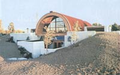
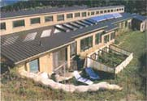
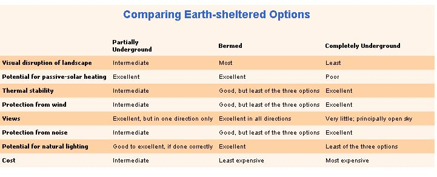
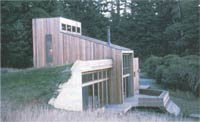
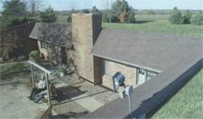

Down To Earth Homes
Earth-sheltered homes cut heating and cooling bills, create weather- and noise-proof shelter and blend in with the landscaping, including comparing options, designing with dirt.
By Dan Chiras
February/March 2003
Earth-sheltered homes fit a wide range of climates and a variety of building sites - even flat ones. Paired with passive-solar design, an earth-sheltered home can save you tens of thousands of dollars in fuel bills during your lifetime. Earth-sheltered homes are comfortable, affordable and energy efficient. And, if thoughtfully designed, earth-sheltered homes admit an abundance of natural light and are far less of an imposition on the landscape than conventional aboveground houses.
SUBTERRANEAN SECRETS
Earth-sheltered homes provide year-round comfort, but not because earth is a good insulator. It's not. Soil has an insulation value of about 0.25 per inch: 14 times less than wet-blown cellulose insulation and 20 times less than certain types of rigid foam insulation.
The secret of earth-sheltered homes actually lies in the constancy of the earth's temperature and its thermal mass. Below the frost line (usually 24 to 60 inches below the surface), the soil maintains a fairly constant 50 degrees, plus or minus a little, depending on the location. The baseline temperature in an unheated, earth-sheltered home in a cold climate (like mine in Colorado, for instance), hovers around 50 degrees. Besides taking advantage of the soil's temperature-moderating effects, earth-sheltered homes also are protected from heat-robbing winter winds and the scorching summer sun. Because conventional aboveground homes expose most of their surface area to the elements, they are more vulnerable to temperature swings, conduction, convection and air infiltration. If outdoor temperatures plummet to 20 degrees below zero, for example, an aboveground home will need a boost of nearly 90 degrees to be comfortable. Raising an earth-sheltered home's internal temperature to the same temperature (around 70 degrees) requires only a modest, 20-degree boost, which is easily provided by passive-solar gain from sunlight. The sod's constant temperature, transferred to the home, also means that you never have to worry about water lines freezing.
In summer, earth-sheltered homes use the sod to keep their cool. It may be a blistering 95 degrees outside, but earth-sheltered homes stay in the low 70s - as cool as any air-conditioned home - without use of a noisy, energy-guzzling air conditioner and without astronomical utility bills.
Passive-solar, earth-sheltered homes boast 80 percent to 90 percent lower heating and cooling bills than conventional homes. "Even when passive solar is not incorporated," says Jay Scafe, President of Terra-Dome, an earth-sheltered home construction company, "fuel bills are frequently 50 percent lower than a conventional, aboveground home."
Typically built from concrete, rammed-earth tires or cement blocks, most earth-sheltered homes resist fire, termites, rodents, rot, earthquakes, wind, hail, hurricanes and tornados. Because of the weather-proofing, many insurance companies offer reduced rates.
Earth-sheltered homes could outlast conventional housing by decades, and they also require fewer resources over their lifetime. With few exposed surfaces, they require very little maintenance. There's no scraping and painting of siding or periodic re-roofing. You won't be cleaning gutters each spring either.
DESIGNING WITH DIRT
Although the costs of building an earth-sheltered home can be competitive with conventional home construction costs (from $75 to $100 per square foot), constructing an earth-sheltered home is not without its challenges, says Scafe. Because they have to bear the constant weight of the earth pressing against the walls (and, in the case of earth-covered roofs, heavy roof loads), earth-sheltered homes have to be carefully designed. Several companies, such as Terra-Dome, Davis Caves and Formworks Building, Inc., sell plans that can be modified to meet your particular needs. Sutherlands, a lumber company that sells home kits, also sells a package for a three-bedroom earth-sheltered home, complete with insulation, doors, plumbing supplies and much more. The $22,000 price tag does not include a backup heating or cooling system, or concrete.
You may be able to locate a building professional in your area through the American Underground Construction Association (see " Resources ," Page 100). If you are planning to build the house yourself, consult with qualified professionals. An experienced earth-sheltered-home architect or builder in your area can help you comply with building codes, meet fire safety requirements, and meet roof and insulation specifications. He or she may also help you secure financing.
DIG THIS!
Earth-sheltered homes come in many shapes and sizes; choosing the right design depends on many factors, among them, personal taste, aesthetics, soil type, topography and proximity to groundwater (see " Comparing Earth-Sheltered Options " on Page 97).
Typically nestled into a hillside, partially underground homes are ideal for hilly or mountainous terrain. All but the southfacing walls are bermed, or banked, with earth, and dirt is placed onto the specially reinforced and carefully waterproofed roof and seeded with grasses, wildflowers or other native plants. Some folks even grow gardens on their living roofs. The partially buried earth-sheltered home is suitable for those who want to integrate their homes into the site and take advantage of passive-solar heating. Because water tends to drain down the hill toward the building and off the roof toward the back of the home, it is advisable to build in highly water-permeable soils and to install a water drainage system around the perimeter of the buried walls.
Berthed homes are built largely aboveground, and are suited to flat or very slightly sloped terrain. To earth-shelter a bermed home, dirt is pushed up against the waterproofed walls, usually to just below the windows, with doorways left unbermed. To provide additional earth-sheltering, some builders add a living roof (see " Living Roofs ," Page 98). For those who are less concerned about merging their home with the site or for whom high water tables or water-impermeable soils pose a problem, the bermed structure may fit the bill.
Bermed and partially underground homes can take advantage of clerestory windows, a bank of vertical windows that runs along the uppermost portion of a wall, which helps bring additional natural light into the structure. Even though there are no windows on the north side of my house, you wouldn't have the slightest idea that you were nearly underground. The combination of the clerestory windows and south-facing glazing bring in so much sunlight that I rarely need to turn lights on during the day. When the sun shines, my house comes alive with light.
The completely underground home - built around an atrium or courtyard - is perfect for those who want to blend unobtrusively with the landscape, and is well-matched for flatter sites that have permeable, well-drained soils and no threat of groundwater intrusion caused by a high water table. To ensure adequate lighting, rooms are built around a sunken courtyard. For more uniform lighting, special skylights, called lightwells, may be installed to deliver light to the backs of rooms. Visitors and occupants enter via a stairway that descends into the atrium. Most atria are paved or filled with decorative rock. Plants may be grown in the atrium, but because this space receives very' little direct sunlight, they tend to fare poorly.
UNDER CONSIDERATIONS
Earth-sheltered homes come with their own set of special considerations. One of them is radon, a colorless, odorless radioactive gas produced by naturally occurring uranium in the Earth's crust.
Check radon levels in the soil before you build. Purchase a land radon test kit or use a regular indoor radon test kit, which is placed on a couple of bricks, then covered with a bucket and removed after an appropriate period, as stated in the instructions. Although radon can be remediated, it's good to know if the gas is there so you can install an effective radon removal system.
Earth-sheltered homes are generally more humid than aboveground homes. Scale's company installs ventilation systems controlled by humidistats that bring in drier, fresh air and mix it with moist, interior air. This helps prevent moisture from reaching uncomfortable levels inside the home. Other homeowners run a dehumidifier year-round to control excess moisture.
When you're ready to build, be sure to choose a site that will naturally drain water away from your house. Steer clear of areas that collect water during rainstorms or when snow melts. Avoid building in natural surface drainage areas or be sure to channel natural water surface flows around the building site.
A good site with natural drainage also requires permeable soils. The most permeable soils are granular and consist of a fair amount of sand or gravel. The worst draining soils have a high clay content, and expand and contract as moisture levels fluctuate. Perform percolation tests on the site's soil to determine its permeability.
Build above the water table, the upper limit of the groundwater. Building below the water table, while possible, increases the likelihood of leakage. In wetter climates, install drainage systems to move water away from the house. French drains, which consist of porous, 4-inch-diameter pipes covered with filter cloth and located in a bed of 3/4-inch crushed rock along the building's perimeter, work well.
Water has a curious way of finding any overlooked nook or cranny in a building, so waterproof the walls and the roof well. Even a tiny hole can let in water, wreaking havoc over time. Finding and repairing a leak can be difficult and costly, requiring removal of large quantities of dirt. Hedge your bets and waterproof, waterproof, waterproof. Earth Sheltered Technology of Mankato, Minnesota, uses a triple-layered waterproofing system that's backed by a lifetime warranty against leakage. A primary layer of dry bentonite clay is covered by heavy polyethylene sheeting, which is then capped with an oversized, heavy pool liner. Terra-Dome paints buytl rubber onto its concrete dome roofs, then applies a product called Paraseal (bentonite clay applied to a plastic sheet) over the most leak-likely areas. On my wooden roof, I used Bituthene sheeting covered by a half-inch layer of foam to protect it during backfilling.
Once you've waterproofed, insulate. Although an earth-sheltered home depends on the temperature-moderating qualities of the earth, good insulation (usually a rigid foam) between the building envelope and surrounding soil helps to ensure greater year-round comfort. In the winter, for instance, it reduces heat migration out of the home and into the soil. It also keeps walls warmer and prevents condensation, which can lead to mold and mildew and a host of related health problems.
Earth Sheltered Technology installs 3 inches of rigid polystyrene foam insulation over vertical walls and 6 inches over the roof, covered with 3 or more feet of earth. Terra-Dome places 2 inches of rigid polystyrene foam over the dome, which is typically 3 to 7 feet below grade; 1 inch of rigid foam over the back walls; and 2 to 3 inches over any exposed concrete, which is then typically stuccoed or covered with brick.
To further diminish heat loss and trap heat around the structure, I installed wing insulation - rigid foam insulation that is buried 18 inches below the surface and extends 2 to 4 feet horizontally from the walls. I placed insulation over a 6-inch layer of crushed granite to keep the area around my walls dry. As an added precaution, I also constructed plastic-lined and rock-filled drainage ditches on the surface to prevent water from percolating down from the surface. The drier the soil, the lower the heat loss.
For optimal winter comfort, orient your home to the south to take advantage of the low-angled winter sun and include the proper amounts of glass and thermal mass in your design (see "Build a Solar Home and Let the Sunshine In," August/September 2002). In many climates, passive-solar heat can serve most of your heating needs; only a small backup heating system (such as a woodstove) may be needed for heat when the clouds roll in.
Even if your site isn't ideally suited for passive-solar, an earth-sheltered home still will outperform a conventional home. The folks at Earth Sheltered Technology build homes that face in any direction, and say even north-facing homes enjoy "in excess of 50 percent energy savings in the winter and considerably more in hot summer months."
Whether you're in the market to build, buy or sell an earth-sheltered home, keep in mind that earth-sheltered homes still are considered by many to be "alternative." Selling one may require far greater diligence than selling a conventional home. If you're a buyer, you may encounter burners when applying for a conventional mortgage, which could require you to seek out more progressive lending agencies. And finding an earth-sheltered home to buy can be even more problematic, Shafe says.
But, in a way, that speaks volumes for the merits of these structures. Of all the earth-sheltered homes he's built, only 10 have been put on the market in the past nine years. His clients like their homes so much that they stay for life.
Dan Chiras writes books and articles about ecological design and building from his earth-sheltered home in Evergreen, Colorado.
Resources
Books
Earthship: Build Your Own, Vol. 1 by Michael Reynolds Earthship: Systems and Components, Vol. 2 by Michael Reynolds Earthship: Evolution Beyond Economics, Vol. 3 by Michael Reynolds The Complete Book of Underground Houses: How to Build a Low-Cost Home by Rob Roy The Earth-Sheltered House: An Architect's Sketchbook by Malcolm Wells The $50 & Up Underground House Book: How to Design and Build Underground by Mike Oehler
Organizations
American Underground Construction Association
3001 Hennepin Ave. S.
Suite D202
Minneapolis, MN 55408
(612) 825-8933
www.auaonline.org
Conferences and referrals to earth-sheltered-building professionals
Useful Web Sites
For a list of architects, builders, books and plans in the United States, Canada, Europe and New Zealand, log on to www.earth-house.com
For general information, photos, building plans, government information and guidelines, visit architecture.about.com/cs/earthsheltered/
Also visit architect Malcolm Wells' Web site at www.malcolmwells.com .
|
 The soil bermed around this home in Tempe, Arizona, helps the house keep its cool. |
 The author's earth-sheltered Colorado home is comfortable and energy-efficient. |
 This home in Applegate, California, combines the benefits of earth-sheltering with passive-solar gain. |
 This partially underground, earth-sheltered home near Overbrook, Kansas, was designed to thwart the brisk Midwestern winds while providing a sunny, sheltered courtyard that owners Larry and DeeAnn Woodson say remains enjoyable almost year-round. |
 |
 |